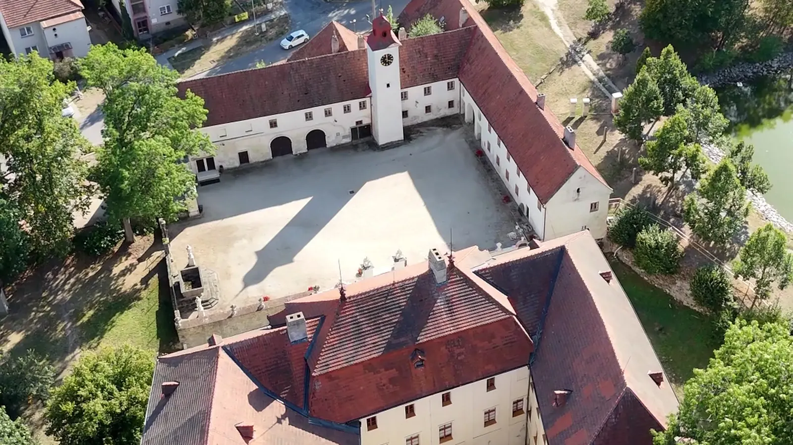
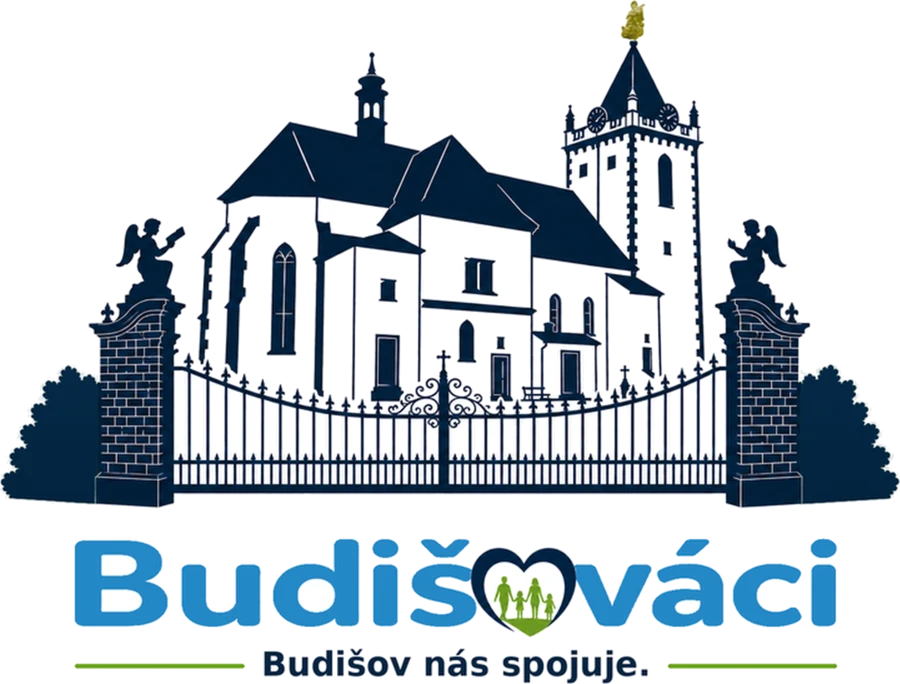
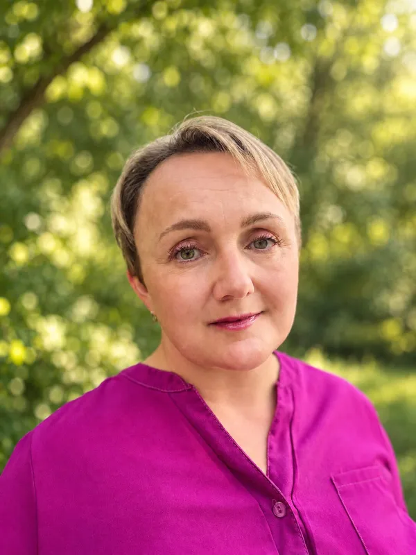
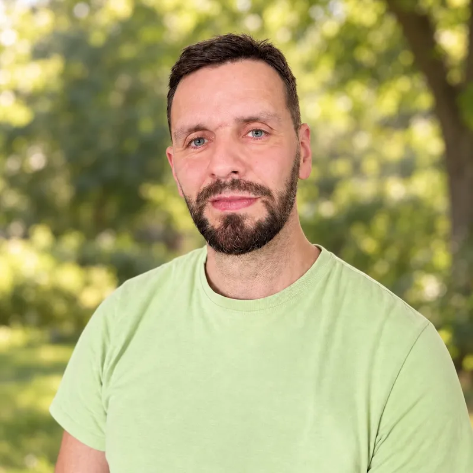
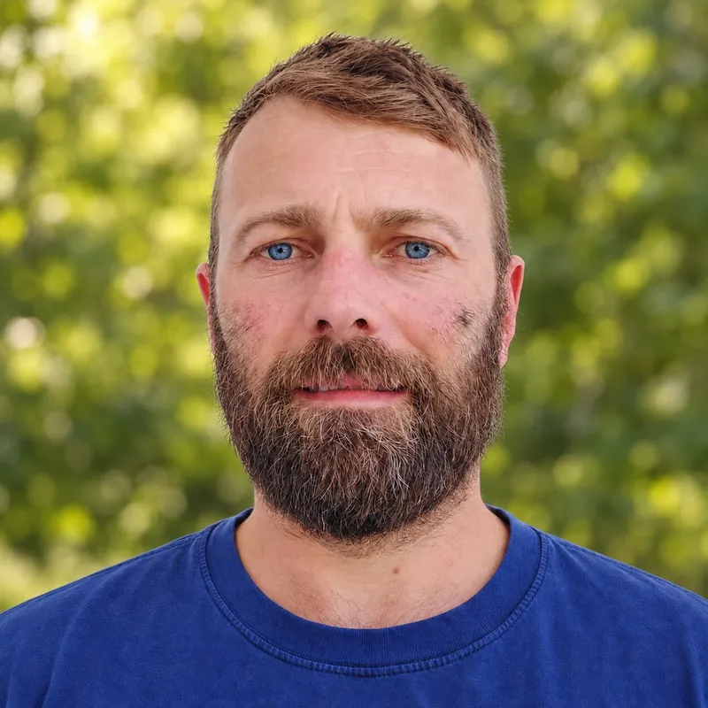
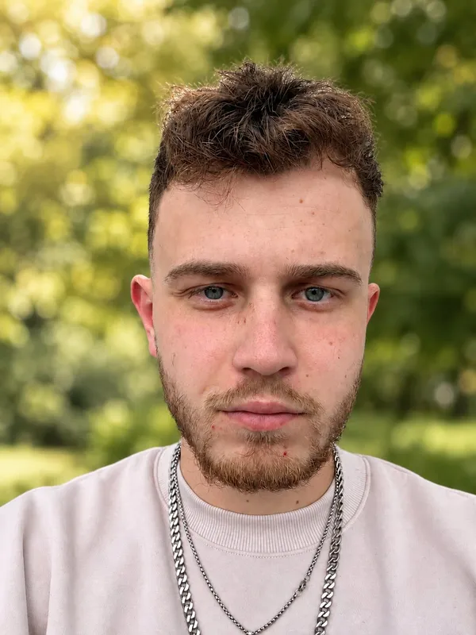
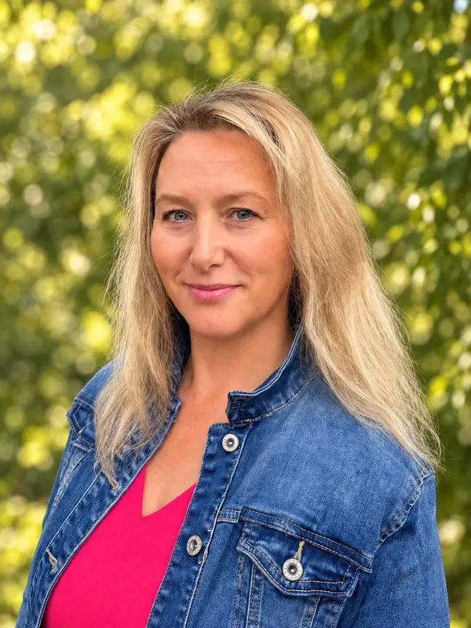
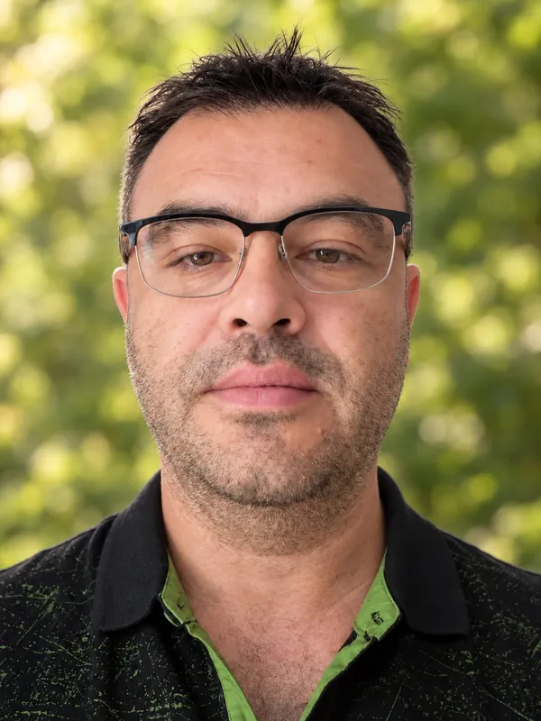
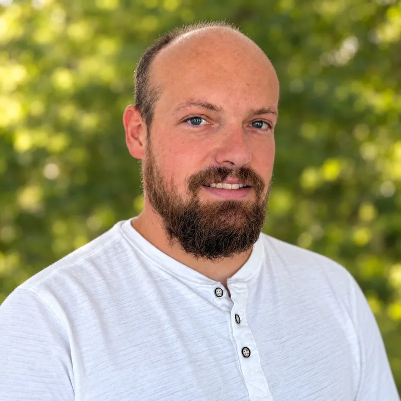
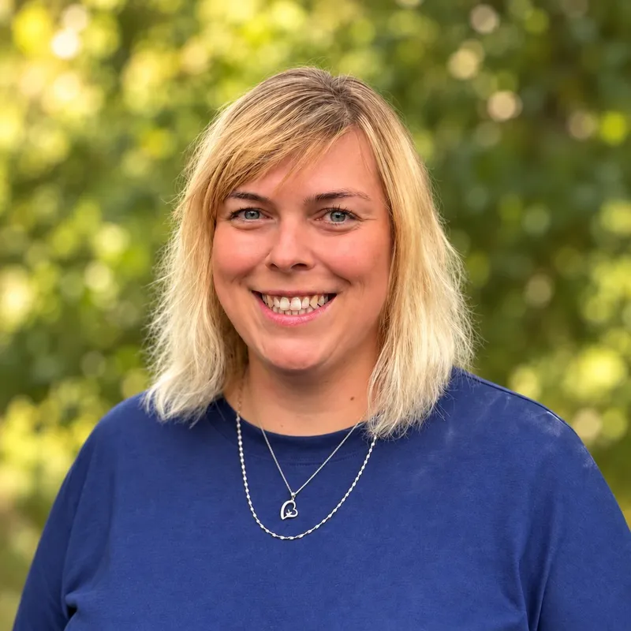

Budišov
nás spojuje.
Jsme sdružení sousedů z Budišova a okolních částí. Spojuje nás obec, ve které chceme dobře žít, a konkrétní plán, jak ji společně posouvat dál.

- 9.–10. 10.volby 2026
Sousedé, ne
profesionální politici
Budišováci jsou lidé, které potkáváte ve škole, v práci, na poště i na návsi. Nespojuje nás politika, ale místo, Budišov a jeho části. Do voleb jdeme se dvěma kandidátkami a jedním cílem: obec otevřená, hospodárná a příjemná pro život všech generací.

Deset oblastí,
na kterých nám záleží
Žádné plané sliby. Rozklikněte kteroukoliv oblast a přečtěte si, co konkrétně chceme pro Budišov udělat.
Zprůhlednění a zefektivnění hospodaření obce
Zpřístupníme přehled hospodaření obce online tak, aby občané jednoduše viděli, odkud peníze přicházejí a na co jsou vynakládány. Chceme také zavést participativní rozpočet, díky kterému budou moci občané přímo rozhodovat o části obecních investic.
Aktivní využívání dostupných dotací
Budeme pravidelně sledovat aktuální dotační programy a aktivně využívat ty, které dávají smysl a jejichž podmínky jsou pro obec přijatelné.
Knihovna jako centrum vzdělávání a komunitního života
Chceme vytvořit moderní a důstojnou knihovnu, která nebude pouze místem pro půjčování knih, ale také centrem vzdělávání a komunitního života. Propojíme ji se školkou a školou, podpoříme spolupráci s dalšími knihovnami a nabídneme programy pro děti, rodiče i seniory. Prostor chceme využívat také pro besedy, přednášky, školení a další aktivity spojující četbu s moderními technologiemi.
Bezpečné okolí školy a řešení parkování
Najdeme konkrétní a dlouhodobě funkční řešení parkování u školy, které zvýší bezpečnost dětí, rodičů i zaměstnanců školy.
Lepší systém nakládání s bioodpadem
Zajistíme dostatečnou kapacitu pro odkládání bioodpadu, zejména v jarních měsících, například pomocí velkoobjemových kontejnerů. Budeme hledat možnosti jeho efektivního zpracování v kompostárně a nabídnutí vzniklého kompostu zpět občanům.
Čistší obec a lepší nakládání s odpady
Zlepšíme systém třídění odpadu i informovanost občanů o jeho správném třídění. Zaměříme se také na pořádek a celkovou úroveň kontejnerových stání a budeme hledat praktická řešení vedoucí k čistší a příjemnější obci.
Revitalizace obce a veřejného prostoru
Budeme postupně zlepšovat stav chodníků, veřejného osvětlení, zeleně a dalších veřejných prostranství. Zaměříme se na pravidelnou údržbu, čistotu a vzhled Budišova i jeho přidružených částí, včetně Kundelova a Mihoukovic.
Bezpečné propojení jednotlivých částí obce
Budeme rozvíjet bezpečné trasy pro pěší a cyklisty mezi jednotlivými částmi Budišova a hledat možnosti jejich propojení s okolními obcemi a významnými místy. Podpoříme bezpečný pohyb dětí, seniorů, pěších i cyklistů a zároveň využijeme potenciál těchto cest pro rekreaci a turistiku.
Pravidelný dialog s občany a mladými lidmi
Jednou za čtvrtletí uspořádáme otevřenou besedu vedení obce s občany. Lidé zde dostanou prostor ptát se, přicházet s podněty a diskutovat o dění v obci. Stejně pravidelně chceme pořádat setkání se zástupci školy, učiteli a žáky 8. a 9. tříd. Zajímá nás jejich pohled na obec, přání i nápady a chceme jim umožnit podílet se na budoucí podobě Budišova.
Zámek, park a kultura jako příležitost pro obec
Navážeme na současnou spolupráci obce se zámkem a budeme ji dále rozvíjet. Chceme pokračovat v pořádání kulturních a společenských akcí a ještě více propojovat obec, faru, zámek a park. Budeme hledat možnosti dalšího využití zámeckého parku – například prostřednictvím stezek, naučných tabulí nebo smysluplného využití zahradního domku či skleníku jako klubovny pro děti a mládež, prostoru pro odpolední kroužky a další aktivity.
Prosím, běžte k volbám, volte nové tváře, volte nás!
Díky za důvěru!Budišováci I.

Mgr. Barbora Mikysková
Vede kandidátku Budišováci I. Ve škole i v obci ji spojuje jedno téma, aby tu měly děti i mladí důvod zůstat.
Mám ráda přírodu, jezdím na kole nebo chodím na procházky. Před pár lety jsem propadla kouzlu otužování. Velmi ráda bych svojí energií a optimismem přispěla k tomu, aby byl Budišov ještě lepším místem pro všechny. Společně můžeme tvořit budoucnost, na kterou budeme pyšní.

David Kašpar
Kandidát Budišováci I.Chci férový a rovný přístup vždy a ke všem. Třeba za Budišov jsem hrál celkem 26 let fotbal a ten mě naučil týmovosti a soudržnosti. Když je ta parta dobrá a funkční, dějí se klidně i zázraky. Naopak když si každý hraje sám za sebe, je to poznat nejen na celkovém dojmu, ale hlavně pak na výsledku. Naše parta Budišováků je skvělá a chceme vám ukázat „Budišovský zázrak“.

Pavel Jindra
Kandidát Budišováci I.Nebojím se a nikdy jsem se nebál říct svůj názor nahlas, i když to bylo někdy nepříjemné. Mé hlavní zásady jsou upřímnost, otevřenost a pravdomluvnost. A tak by to měl mít každý! Mám zkušenosti z podnikání u nás i v zahraničí a přesně tak vidím, kde jsou a v čem jsou naše mezery. Jinak jsem tělem i duší motorkář.

Tomáš Syrový
Kandidát Budišováci I.Jsem týmový a společenský typ člověka. Rád se věnuji sportu a všem různým společenským aktivitám. Přes rok a půl jsem se aktivně věnoval sportu, konkrétně fotbalu za náš Budišov, a jak je známo, tak ve fotbale je týmová práce nejdůležitější a myslím si, že tohle přesně potřebuje i náš Budišov.
- 1Mgr. Barbora Mikyskováučitelka ZŠ · 44
- 2David KašparOSVČ · 47
- 3Pavel Jindrapodnikatel · 42
- 4Tomáš Syrovýmontážní dělník · 22
- 5Libuše Pospíšilovávedoucí Pošty Budišov · 42
- 6Pavel Mikyskamistr, kovovýroba · 45
- 7Veronika Ticházdravotní sestra · 43
- 8Tomáš Pospíšilvedoucí výroby · 42
- 9Tomáš Klištinecpracovník ZD Budišov · 46
- 10Martina Hofmannovávedoucí prodejny · 48
- 11Mgr. Pavlína Fialaučitelka SŠ · 34
- 12Jana Dvořákovádůchodkyně · 74
- 13Ing. Jana Janováučitelka ZŠ · 59
- 14Anna Křehlíkováinvalidní důchodkyně · 49
- 15Vlasta Lisádůchodkyně · 70
Budišováci II.

Ing. Ludmila Požárová
Vede kandidátku Budišováci II. K obci přistupuje jako k dobře vedenému hospodaření, přehledně, zodpovědně a s ohledem na budoucnost.
Jsem vystudovaná ekonomka a věnuji se účetnictví a ekonomice firem. Vedla jsem ekonomické oddělení a vím, jak důležitá je spolupráce, respekt a zodpovědnost. Rodina je pro mě základ a vždy byla na prvním místě. Mám ráda férové jednání a když není něco v pořádku, ozvu se. Dobré nápady ráda podpořím bez ohledu na to, od koho přicházejí. Ve volném čase ráda čtu, zajímám se o historii, sport, cestování a vaření. Do voleb jdu proto, že nechci jen přihlížet, ale také přiložit ruku k dílu. Věřím, že našemu městysi prospějí nové tváře, elán, dobré nápady a chuť posouvat věci zase o kousek dál.

Zdeněk Večeřa
Kandidát Budišováci II.Jsem otec od rodiny, myslivec, rybář a troufám si tvrdit i pracovitý člověk. Zkušenosti z obecního zastupitelstva sice nemám žádné, ale trápí mě, když někdo má pracovat pro nás, pro obyvatele Budišova, a spíše pracuje sám pro sebe. Co mohu slíbit, je, že mám odhodlání, chuť pracovat a posouvat věci dál. To vám chci také dokázat.

Jakub Starý
Kandidát Budišováci II.Od mládí se věnuji kolektivním sportům, nyní znovu aktivně hokeji. Z pozice brankáře, ale i ze služby v armádě vím, že je důležitý individuální výkon, ale zároveň je nutné umět táhnout za jeden provaz a obětovat se pro tým.

Bc. Renáta Klapalová
Kandidátka Budišováci II.V Kundelově jsem vyrůstala a po letech jsem se sem ráda vrátila, protože mě vždy přitahoval klid, příroda a energie tohoto místa. Jsem ráda, že právě tady mohou vyrůstat i moje děti a vytvářet si k tomuto místu stejný vztah. Mám ráda svoji práci s dětmi, protože je každý den jiný, pestrý a přináší nové výzvy. Záleží mi také na tom, aby se Budišov a jeho místní části dál rozvíjely jako příjemné místo pro život všech generací.
- 1Ing. Ludmila Požárováekonomka · 47
- 2Zdeněk Večeřadělník · 46
- 3Jakub Starývoják z povolání · 37
- 4Bc. Renáta Klapalováučitelka MŠ · 37
- 5Aleš Tesařnákupčí · 47
- 6Nikola Krčálováúčetní · 34
- 7Jitka Otoupalovápřípravářka · 38
- 8Bc. Tomáš Horkýadjunkt lesní správy · 26
- 9Mgr. Stanislava Spenceručitelka SŠ · 51
- 10Jan Fojtíkzámečník · 50
- 11Ing. Vlastimil Vrzalsoukromý zemědělec, důchodce · 73
- 12Hana Starávychovatelka školní družiny · 58
- 13Lukáš Klapalstrojník, bagrista · 43
- 14Iva Matouškovápodnikatelka · 45
- 15Helena Kosteleckádůchodkyně · 70
Máte 15 hlasů.
Využijte je všechny.
V Budišově se volí 15 zastupitelů, máte tedy až 15 hlasů a nemusíte využít všechny. Na hlasovacím lístku můžete volit třemi způsoby. Nejvíc nových tváří v letošních volbách najdete u nás: devět na jedné kandidátce a dokonce deset na druhé.
Jedna kandidátka
Zakřížkujete jednu celou kandidátku. Hlas pak dostanou její kandidáti v pořadí, v jakém jsou na lístku.
Jednotliví kandidáti
Křížkem označíte konkrétní lidi, i napříč kandidátkami. Celkem nejvýše 15.
Kombinace
Zakřížkujete jednu kandidátku a k tomu jednotlivce z jiných. Jednotlivci dostanou hlas jako první, zbylé hlasy připadnou zvolené kandidátce podle pořadí.
Důležité
- Označte nejvýše 15 kandidátů. Víc křížků = neplatný hlas.
- Křížek u kandidáta na kandidátce, kterou už máte zakřížkovanou celou, nepřidává další hlas.
- Když volíte jen jednotlivce, nevyužité hlasy propadnou. Ideální je udělat všech 15 křížků u našich kandidátů.
Pokud chcete, aby vaše hlasy pomáhaly jen kandidátům Budišováci I. a Budišováci II., vybírejte své kandidáty pouze z těchto dvou kandidátek.
Děkujeme moc předem, nebudete litovat.A ještě jedna důležitá věc: pořadí kandidátů na kandidátce není všechno. Pokud máte důvěru v konkrétního člověka, podpořte ho křížkem u jeho jména. Každý křížek může ovlivnit nejen to, kdo se do zastupitelstva dostane, ale také kolik mandátů získají jednotlivé kandidátky.
- Pátek 9. 10.14:00–22:00
- Sobota 10. 10.8:00–14:00
- KdeObecní úřad Městys Budišov
Nejste si jistí? Zavolejte nám: +420 602 702 803
Kandidátky v Budišově
od roku 1994.
Od roku 1994 do roku 2022 se o zastupitelstvo v Budišově ucházelo přes 280 lidí. Podívejte se, kdo kandidoval nejdéle a komu to vyneslo mandát.
| Jméno a příjmení | 1994 | 1998 | 2002 | 2006 | 2010 | 2014 | 2018 | 2022 | Mandáty |
|---|
Zdroj: přehled kandidatur a mandátů zpracovaný pro potřeby kampaně, na základě veřejných výsledků voleb do zastupitelstva městyse Budišov.
Přijďte za námi
Divadelní představení pro malé i velké
Sál ZŠ Budišov
Beseda s kandidujícími subjekty
Sál ZŠ Budišov
Volby do Zastupitelstev obcí
Obecní úřad Městys Budišov
Přečtěte si
naše noviny
Kdo jsme, proč kandidujeme a co chceme pro Budišov udělat, všechno na čtyřech stranách. Prolistujte si je tady, nebo si je stáhněte a vytiskněte.
Stáhnout noviny ↓Napište nám
Rádi zodpovíme jakoukoliv otázku k našemu sdružení, programu, kandidátům i k dění v obci. Stejně tak budeme rádi za podněty různého charakteru – pokud Tě něco trápí, chybí Ti nebo jen máš nápad, chceš někomu poděkovat – napiš nám.